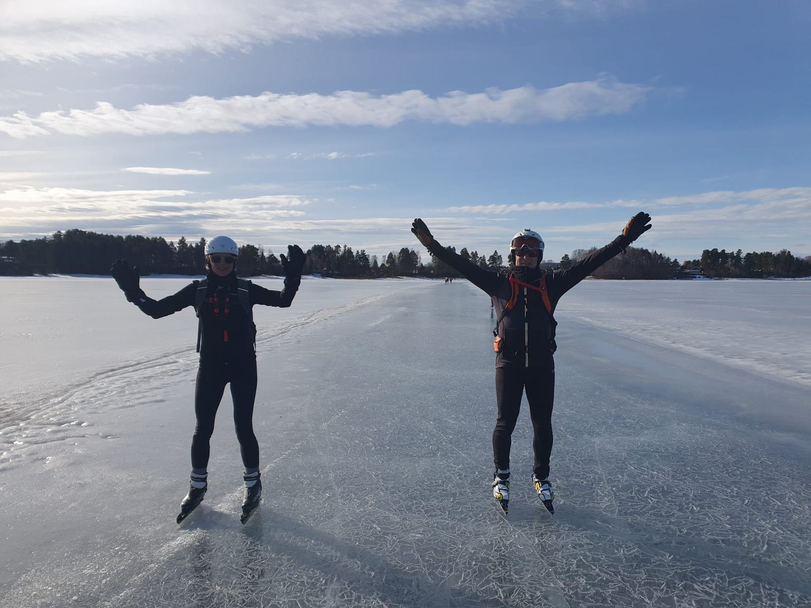
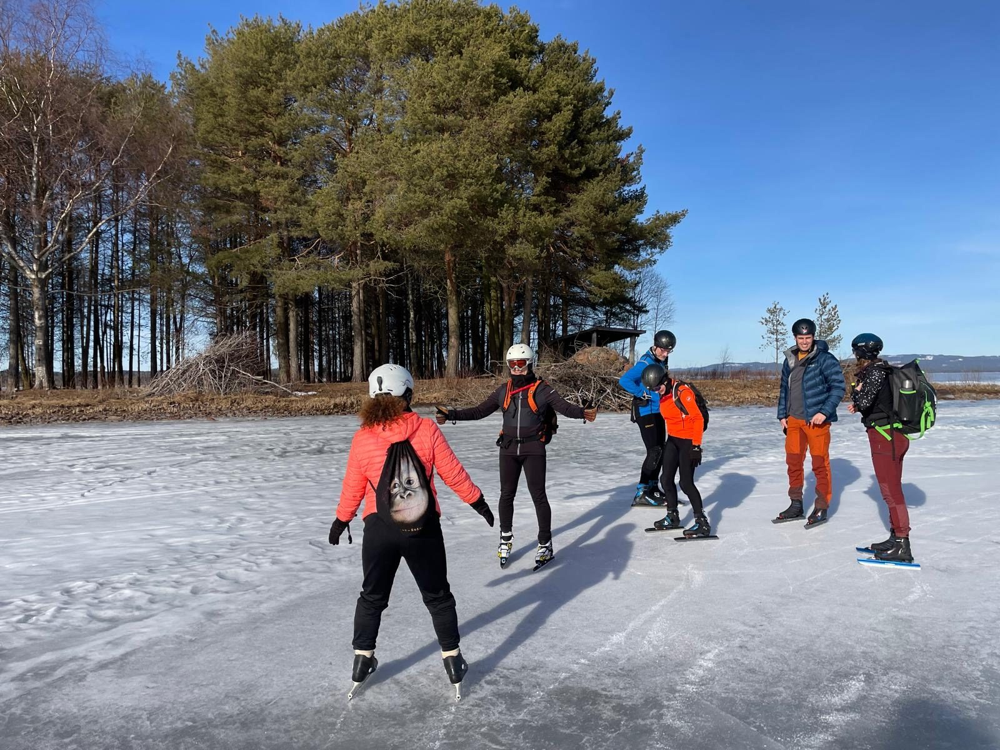
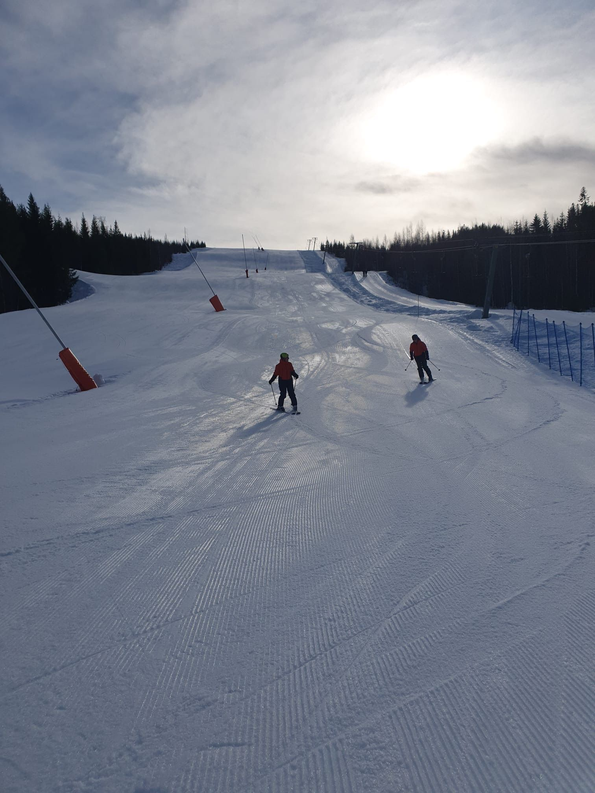
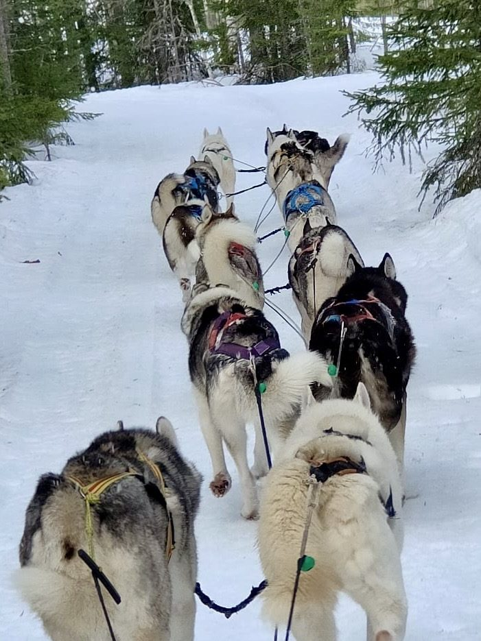
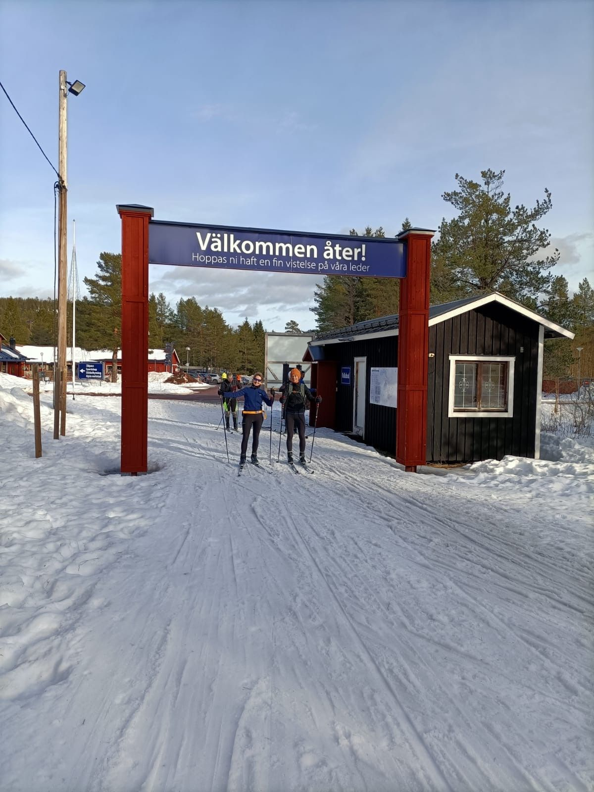

- Wanneer
- 1 tot en met 8 maart 2025
- Waar
- Dalarna, Zweden
- De groep
- 7 personen
- Het ijs
- Slecht: we konden maar een paar keer schaatsen
- Wat we deden
- Schaatsen, skiën, langlaufen, een husky-tocht en een winterwandeling met kampvuurlunch
- Geregeld
- Elke avond eten, en alle boodschappen gebracht
Op de reispagina's lees je wat een reis inhoudt. In dit verslag lees je hoe deze week echt ging, ook toen het ijs tegenviel.
Het ijs
Het ijs viel tegen
Eerlijk is eerlijk: het ijs was deze week slecht. We hebben maar een paar keer kunnen schaatsen. Zo gaat het soms met natuurijs. Op de momenten dat het wel kon, gingen we met de groep het ijs op.



Wat we doen als het ijs niet meewerkt, lees je in wat gebeurt er als het geplande ijs niet goed genoeg is.
Activiteiten
Skiën, langlaufen en husky's
Naast het schaatsen heeft de groep alle activiteiten gedaan, waaronder skiën op de piste, langlaufen en een tocht met husky's.
Welke activiteiten je naast het schaatsen kunt boeken, zie je op de pagina's van Orsa en Falun.



Extra
Een winterwandeling met kampvuurlunch
Als extra maakten we met de groep een winterwandeling door een natuurpark. Onderweg hebben we bij het kampvuur geluncht.
Elke avond
Eten en boodschappen geregeld
Elke avond hebben wij het eten verzorgd, en we brachten alle boodschappen. Zo hoefde de groep nergens zelf voor te zorgen.
Na afloop
Wat de groep ervan vond
Ondanks het ijs was de groep erg tevreden. Na afloop lieten ze hele leuke reviews achter, zoals deze twee:
Echt een fantastische week gehad, met Joey en Vera, in Zweden. Zij hebben onze reis heel goed verzorgd en super goed aangepast toen het weer wat te warm werd om te schaatsen. Wij zijn door hen verwend met heerlijke maaltijden op een top locatie recht aan het meer.
Wat hebben wij een fantastische week beleefd aan het Orsameer. De schaatskoorts en het enthousiasme van Joey en Vera werken aanstekelijk. Een aanrader voor wie een winterse week in Zweden wil ervaren!
Zelf met een groep mee?
In de winter van 2027 staan er twee begeleide groepsreizen naar Dalarna op de planning, elk op een vaste datum: naar Orsa van 28 tot en met 31 januari en naar Falun van 4 tot en met 7 februari.
Twijfel je tussen een groep, een eigen reis met gids of helemaal zelfstandig? Lees dan welke schaatsreis bij je past.